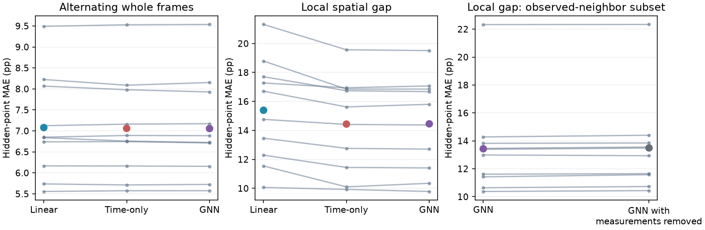

线性插值给出初值。只看本区域的模型用与 GNN 相同的目标节点特征学习修正，但没有邻居和边特征。两种模型分别有 1657 和 1634 个参数，沿用 04 的患者分折、训练预算和选轮规则。GNN 直接用 04 保存的最佳权重。误差只在原始隐藏点上计算，先平均同一患者的访视，再等权平均患者。
| 缺失方式 | 患者数 | 线性 | 只看本区域 | GNN | GNN − 只看本区域 |
|---|---|---|---|---|---|
| 整帧隔点隐藏 | 10 | 7.079 | 7.060 | 7.056 | -0.004 |
| 局部连续缺失 | 10 | 15.392 | 14.436 | 14.453 | +0.017 |
单位均为百分点。最后一列为负，表示 GNN 比只看本区域的模型更准。
只看局部缺失中原本有实测邻居的点。边、目标的可见数据和评估位置保持一致。同一个 GNN 再预测一次，这次每条来自实测邻居的消息改用该邻居前后观测算出的线性估计，同时更新观测标记和时间缺口特征。这是推理时的敏感性检查，使用了比训练时更少的同刻测量。
| 患者数 | 原 GNN | 去掉邻居同刻测量 | 误差变化 |
|---|---|---|---|
| 10 | 13.431 | 13.495 | +0.063 |
误差变化为正，表示撤掉这类观测后估计更差。此表只统计受干预的点。
